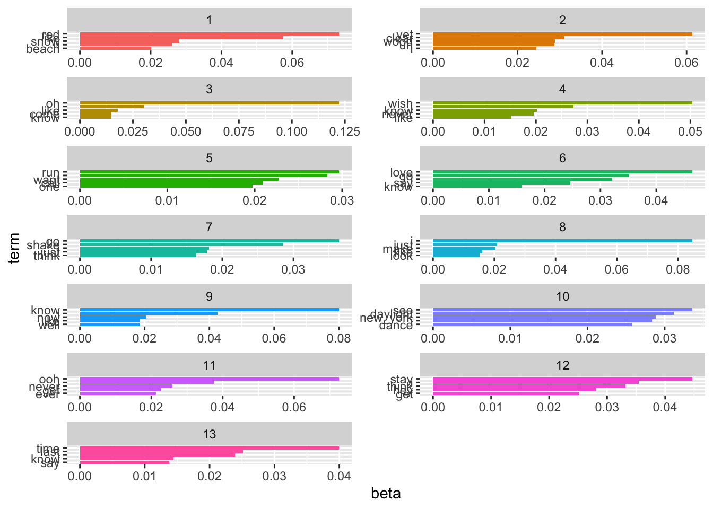
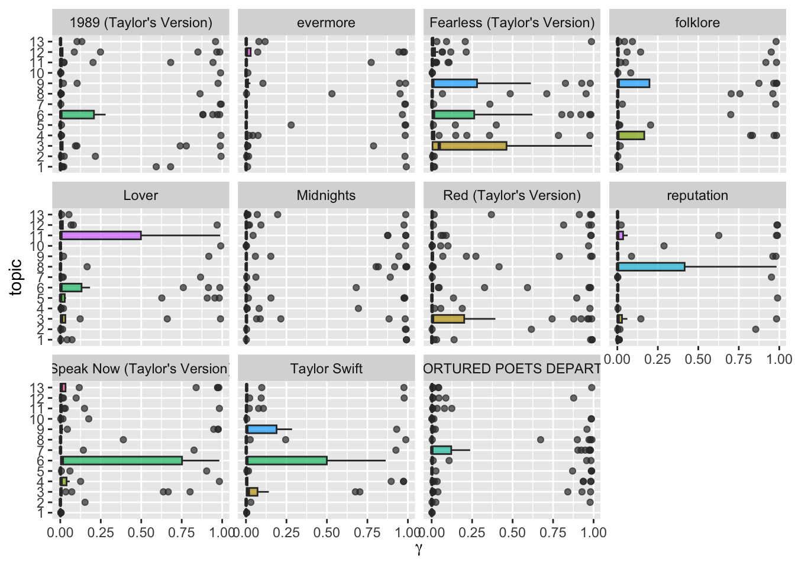
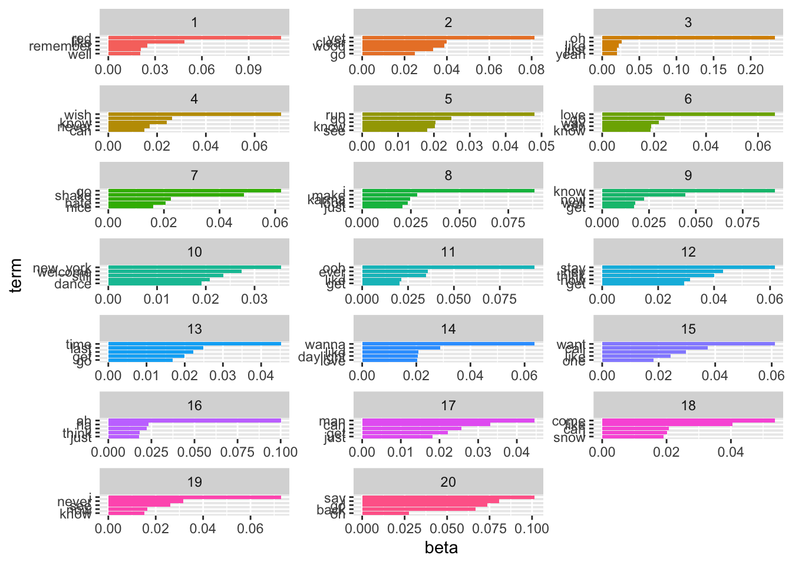
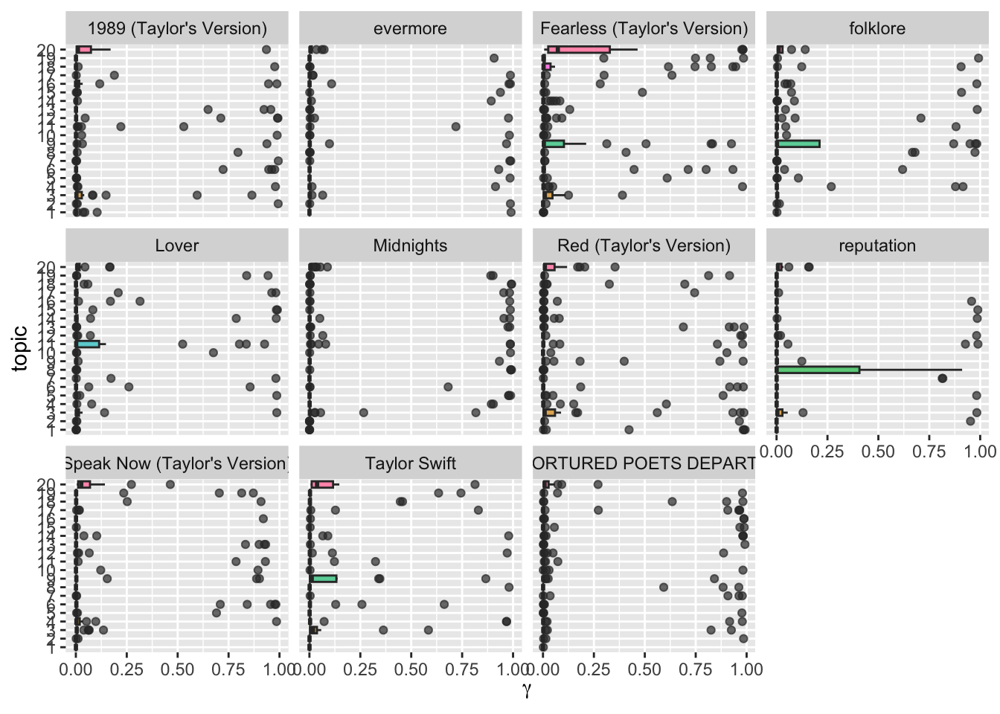

Chapter 15: Unsupervised Machine Learning
Latent Dirichlet Allocation (LDA)
In a former section, I, first, explored how the sentiment in the SOTU addresses has evolved over the 20th century. Then, we looked at the decade-specific vocabulary. This, paired with previous knowledge of what happened throughout the 20th century, sufficed to gain some sort of insight. However, another approach to infer meaning from text is to search it for topics.
The two main assumptions of LDA are as follows:
- Every document is a mixture of topics.
- Every topic is a mixture of words.
Hence, singular documents do not necessarily be distinct in terms of their content. They can be related – if they contain the same topics. This is more in line with natural language use.
The following graphic depicts a flowchart of text analysis with the tidytext package.

What becomes evident is that the actual topic modeling does not happen within tidytext. For this, the text needs to be transformed into a document-term-matrix and then passed on to the topicmodels package (Grün et al. 2020), which will take care of the modeling process. Thereafter, the results are turned back into a tidy format, using broom so that they can be visualized using ggplot2. The following analysis focuses on Taylor Swift lyrics and partially borrows from this blog post by Julia Silge.
Document-term matrix
To search for the topics which are prevalent in the singular addresses through LDA, we need to transform the tidy tibble into a document-term matrix first. This can be achieved with cast_dtm().
needs(taylor, tidyverse, tidytext, SnowballC, stm, spacyr)
taylor_album_songs |> glimpse()Rows: 240
Columns: 29
$ album_name <chr> "Taylor Swift", "Taylor Swift", "Taylor Swift", "T…
$ ep <lgl> FALSE, FALSE, FALSE, FALSE, FALSE, FALSE, FALSE, F…
$ album_release <date> 2006-10-24, 2006-10-24, 2006-10-24, 2006-10-24, 2…
$ track_number <int> 1, 2, 3, 4, 5, 6, 7, 8, 9, 10, 11, 12, 13, 14, 15,…
$ track_name <chr> "Tim McGraw", "Picture To Burn", "Teardrops On My …
$ artist <chr> "Taylor Swift", "Taylor Swift", "Taylor Swift", "T…
$ featuring <chr> NA, NA, NA, NA, NA, NA, NA, NA, NA, NA, NA, NA, NA…
$ bonus_track <lgl> FALSE, FALSE, FALSE, FALSE, FALSE, FALSE, FALSE, F…
$ promotional_release <date> NA, NA, NA, NA, NA, NA, NA, NA, NA, NA, NA, NA, N…
$ single_release <date> 2006-06-19, 2008-02-03, 2007-02-19, NA, NA, NA, N…
$ track_release <date> 2006-06-19, 2006-10-24, 2006-10-24, 2006-10-24, 2…
$ danceability <dbl> 0.580, 0.658, 0.621, 0.576, 0.418, 0.589, 0.479, 0…
$ energy <dbl> 0.491, 0.877, 0.417, 0.777, 0.482, 0.805, 0.578, 0…
$ key <int> 0, 7, 10, 9, 5, 5, 2, 8, 4, 2, 2, 8, 7, 4, 10, 5, …
$ loudness <dbl> -6.462, -2.098, -6.941, -2.881, -5.769, -4.055, -4…
$ mode <int> 1, 1, 1, 1, 1, 1, 1, 1, 0, 1, 1, 1, 1, 1, 1, 1, 1,…
$ speechiness <dbl> 0.0251, 0.0323, 0.0231, 0.0324, 0.0266, 0.0293, 0.…
$ acousticness <dbl> 0.57500, 0.17300, 0.28800, 0.05100, 0.21700, 0.004…
$ instrumentalness <dbl> 0.00e+00, 0.00e+00, 0.00e+00, 0.00e+00, 0.00e+00, …
$ liveness <dbl> 0.1210, 0.0962, 0.1190, 0.3200, 0.1230, 0.2400, 0.…
$ valence <dbl> 0.425, 0.821, 0.289, 0.428, 0.261, 0.591, 0.192, 0…
$ tempo <dbl> 76.009, 105.586, 99.953, 115.028, 175.558, 112.982…
$ time_signature <int> 4, 4, 4, 4, 4, 4, 4, 4, 4, 4, 4, 4, 4, 4, 4, 4, 4,…
$ duration_ms <int> 232107, 173067, 203040, 199200, 239013, 207107, 24…
$ explicit <lgl> FALSE, FALSE, FALSE, FALSE, FALSE, FALSE, FALSE, F…
$ key_name <chr> "C", "G", "A#", "A", "F", "F", "D", "G#", "E", "D"…
$ mode_name <chr> "major", "major", "major", "major", "major", "majo…
$ key_mode <chr> "C major", "G major", "A# major", "A major", "F ma…
$ lyrics <list> [<tbl_df[55 x 4]>], [<tbl_df[33 x 4]>], [<tbl_df[…tidy_taylor <- taylor_album_songs |>
unnest(lyrics) |>
group_by(album_name, track_name, album_release) |>
summarize(text = str_c(lyric, collapse = " ")) |>
rowid_to_column("doc_id") |>
mutate(doc_id = doc_id |> as.integer())`summarise()` has grouped output by 'album_name', 'track_name'. You can
override using the `.groups` argument.spacy_initialize(model = "en_core_web_sm")successfully initialized (spaCy Version: 3.8.3, language model: en_core_web_sm)preprocessed_taylor <- spacy_parse(tidy_taylor) |>
entity_consolidate() |>
filter(pos != "PUNCT") |>
filter(str_length(token) > 1) |>
anti_join(get_stopwords(), by = join_by(lemma == word)) |>
mutate(lemma = str_to_lower(lemma)) |>
add_count(doc_id, lemma) |>
filter(!str_detect(lemma, "'")) |>
mutate(doc_id = doc_id |> as.integer()) |>
arrange(doc_id)
taylor_sparse <- preprocessed_taylor |>
select(doc_id, lemma, n) |>
cast_sparse(doc_id, lemma, n)A sparse matrix is similar to a document term matrix in that it contains Documents (rows) and Terms (columns) and specifies how often a term appears in a document.
taylor_sparse |> as.matrix() %>% .[1:5, 1:5] flamingo pink sunrise_boulevard_clink clink young
1 1 1 1 1 1
2 0 0 0 0 0
3 0 0 0 0 0
4 0 0 0 0 0
5 0 0 0 0 3taylor_sparse |> dim()[1] 240 3674Inferring the number of topics
We need to tell the model in advance how many topics we assume to be present within the document. Since we have neither read all the taylor songs (if so, we would hardly need to use the topic model), we cannot make an educated guess on how many topics are in there.
Making guesses
One approach might be to just provide it with wild guesses on how many topics might be in there and then try to make sense of them afterward.
needs(broom)
taylor_lda_k13 <- stm(taylor_sparse, K = 13, verbose = FALSE)The tidy() function from the broom package (Robinson 2020) brings the stm output back into a tidy format. It consists of three columns: the topic, the term, and beta, which is the probability that the term stems from this topic.
beta_taylor_k13 <- tidy(taylor_lda_k13) # gives word distributions per topic
gamma_taylor_k13 <- tidy(taylor_lda_k13, matrix = "gamma") # gives topic probabilities per documentNow, we can wrangle it a bit, and then visualize it with ggplot2.
top_terms_k13 <- beta_taylor_k13 |>
group_by(topic) |>
slice_max(beta, n = 5, with_ties = FALSE) |>
ungroup() |>
arrange(topic, -beta)
top_terms_k13 |>
mutate(topic = factor(topic),
term = reorder_within(term, beta, topic)) |>
ggplot(aes(term, beta, fill = topic)) +
geom_bar(stat = "identity", show.legend = FALSE) +
scale_x_reordered() +
facet_wrap(~topic, scales = "free", ncol = 2) +
coord_flip()
ggsave("tylor_k13_beta.png", width = 7, height = 10, bg = "white")Raw betas won’t get us anywhere. They just show us the most frequent words per topic. However, these words might also be frequent in other topics. Therefore, we need to use other metrics to make sense of the topics.
labelTopics(taylor_lda_k13, topics = 1:13)Topic 1 Top Words:
Highest Prob: red, like, snow, i, beach, remember, come
FREX: red, snow, beach, style, weird, pocketful, rare
Lift: james_dean, slick, condition, rosy, request, hindsight, a_few_moon_ago
Score: red, beach, snow, style, weird, pocketful, passionate
Topic 2 Top Words:
Highest Prob: yet, clear, wood, uh, i, go, huh
FREX: wood, yet, clear, delicate, huh, happiness, uh
Lift: glorious, discover, wood, last_december, furniture, airplane, brake
Score: yet, wood, clear, happiness, huh, the_great_war, furniture
Topic 3 Top Words:
Highest Prob: oh, i, like, come, know, just, never
FREX: getaway, twenty_-_two, oh, trouble, lavender, rain, grow
Lift: anthem, proudly, revolution, everythi, ing, glaad, surreal
Score: trouble, oh, getaway, twenty_-_two, bedroom, lucky, lavender
Topic 4 Top Words:
Highest Prob: wish, i, know, never, like, give, now
FREX: wish, live, give, sign, wall, long, singing
Lift: 2_am, crooked, fightin, misty_morning, special, superstar, morning_loneliness
Score: wish, crooked, singing, aimee, drew, teardrop, the_very_first_night
Topic 5 Top Words:
Highest Prob: run, i, want, call, one, say, like
FREX: run, call, london, man, dear, darling, ring
Lift: mile, depressed, guide, twenty_year, homecoming, march, hopeless
Score: run, throat, london, dear, splash, reader, sprinkler
Topic 6 Top Words:
Highest Prob: love, go, i, say, know, back, can
FREX: la, today, love, beautiful, way, silence, smile
Lift: flamingo, sunrise_boulevard_clink, clink, aquamarine, swimmin, handprints, cement
Score: la, fairytale, today, fallin, hopin, december, tide
Topic 7 Top Words:
Highest Prob: go, shake, i, just, think, can, say
FREX: shake, hate, finally, breathe, fake, clean, nice
Lift: faker, peaceful, applause, sabotage, moth, certain, sweetness
Score: shake, lightnin, mm_-_mm, finally, hater, evermore, haha
Topic 8 Top Words:
Highest Prob: i, just, make, like, look, get, karma
FREX: karma, bye, gorgeous, usin, boyfriend, di, belong
Lift: dash, bye, tale, agree, directly, exhaust, anti
Score: karma, bye, gorgeous, florida, boyfriend, usin, drug
Topic 9 Top Words:
Highest Prob: know, i, now, like, well, just, get
FREX: know, closure, bless, well, everybody, man, killin
Lift: fox, attitude, temper, picket, april_29th, proposition, version
Score: bless, closure, killin, 18_hour_ago, heartbeat, empire, shoulda
Topic 10 Top Words:
Highest Prob: see, daylight, new_york, i, dance, welcome, now
FREX: daylight, new_york, welcome, maroon, waitin, dance, feeling
Lift: daylight, aglow, kaleidoscope, new_york_welcome, soundtrack, unforgiven, 20_-_year
Score: daylight, new_york, welcome, maroon, aglow, soundtrack, waitin
Topic 11 Top Words:
Highest Prob: ooh, i, never, get, ever, like, wanna
FREX: ooh, starlight, wonderland, end, cornelia_street, hoo, whoa
Lift: important, wonderland, mystify, eeh, 19, memories, stained
Score: ooh, starlight, wonderland, cornelia_street, hoo, eeh, whoa
Topic 12 Top Words:
Highest Prob: stay, i, think, hey, get, now, like
FREX: stay, hey, ha, mad, blood, follow, alive
Lift: este, lettin, aside, og, d.o.c., tlc, od
Score: hey, ha, blood, stay, mad, solve, dramatic
Topic 13 Top Words:
Highest Prob: time, last, i, know, say, still, ask
FREX: last, mr., bet, ask, babe, fiction, timeless
Lift: careful, ba, sweeter, proud, familiarity, breed, contempt
Score: ho, mr., fiction, timeless, last, bet, electric Or look at which documents belong to which topics the most:
gamma_prep <- gamma_taylor_k13 |>
group_by(topic) |>
ungroup() |>
arrange(topic, -gamma) |>
left_join(tidy_taylor, by = c("document" = "doc_id")) |>
select(topic, document, gamma, album_name, track_name) |>
mutate(topic = factor(topic),
term = reorder_within(document, gamma, topic))
gamma_tbl <- gamma_prep |>
group_by(topic) |>
slice_max(gamma, n = 5) |>
ungroup() |>
select(topic, track_name) |>
mutate(id = rep(1:5, times = 13)) |>
pivot_wider(names_from = topic, values_from = track_name, names_prefix = "Topic_")Okay, still tricky. Let’s check which topics co-occur in albums. (This graph is taken from Julia Silge’s blog post linked above, I take zero credit for it.)
gamma_prep |>
ggplot(aes(gamma, topic, fill = topic)) +
geom_boxplot(alpha = 0.7, show.legend = FALSE) +
facet_wrap(vars(album_name)) +
labs(x = expression(gamma))
Okay, we see some differences now. Especially that certain topics are more prevalent in certain albums (for instance, topic 9 in folklore and 12 in fearless). However, still not perfect. Let’s start from scratch and do it properly.
More elaborate methods
LDA offers a couple of parameters to tune, but the most crucial one probably is K, the number of topics. The stm package offers the FindTopicsNumber() function which allows us to train multiple LDA models with different numbers of topics and then compare them based on different metrics.
determine_k <- searchK(taylor_sparse, K = seq(5, 40, by = 1), N = 20)
plot(determine_k)This graph can be read as follows: - Held-Out Likelihood (top left, higher is better) measures how well our model predicts unseen data. We should look for where the curve starts plateauing – i.e, topics beyond this point will only offer diminishing returns and we’ve captured the main patterns in the data. - Residuals (top right, lower is better) assess model fit. The curve should be relatively stable with gradual improvement as K increases. Large spikes indicate convergence problems or model instability at that K value, thus we should avoid those. - Semantic Coherence (bottom left, higher is better) evaluates whether the top words in each topic tend to co-occur together in documents. Topics with high coherence are generally more interpretable. This metric typically decreases as you add more topics, reflecting the trade-off between granularity and interpretability. - Lower Bound (bottom right, higher is better) is a log-likelihood measure that always improves with more topics, so it’s less useful for model selection on its own.
Based on these metrics, we might choose K = 20 as a good balance between model fit and interpretability, mainly due to the semantic coherence and the held-out likelihood starting to plateau around this point.
Sense-making
Now, the harder part begins: making sense of the different topics. In LDA, words can exist across topics, making them not perfectly distinguishable. Also, as the number of topics becomes greater, plotting them doesn’t make too much sense anymore. Let’s do this with our optimized K:
taylor_lda_k20 <- stm(taylor_sparse, K = 20, verbose = FALSE, seed = 1989)
beta_taylor_k20 <- tidy(taylor_lda_k20) # gives word distributions per topic
gamma_taylor_k20 <- tidy(taylor_lda_k20, matrix = "gamma") # gives topic probabilities per document
top_terms_k20 <- beta_taylor_k20 |>
group_by(topic) |>
slice_max(beta, n = 5, with_ties = FALSE) |>
ungroup() |>
arrange(topic, -beta)
top_terms_k20 |>
#filter(topic %in% 1:10) |>
mutate(topic = factor(topic),
term = reorder_within(term, beta, topic)) |>
ggplot(aes(term, beta, fill = topic)) +
geom_bar(stat = "identity", show.legend = FALSE) +
scale_x_reordered() +
facet_wrap(~topic, scales = "free", ncol = 3) +
coord_flip()
labelTopics(taylor_lda_k20, topics = 1:20)Topic 1 Top Words:
Highest Prob: red, like, remember, i, well, love, know
FREX: red, rare, stair, wind, hair, remember, sacred
Lift: scarf, disposition, upstate, all_these_day, patriarchy, three_month, refrigerator
Score: red, rare, scarf, stair, prayer, wind, sacred
Topic 2 Top Words:
Highest Prob: yet, clear, wood, i, go, can, good
FREX: wood, yet, clear, delicate, happiness, decide, cool
Lift: four_year, bike, wood, discover, last_december, furniture, airplane
Score: yet, wood, clear, happiness, delicate, whether, decide
Topic 3 Top Words:
Highest Prob: oh, i, like, just, yeah, never, know
FREX: getaway, oh, twenty_-_two, lucky, lavender, car, work
Lift: anthem, proudly, glaad, surreal, damned, the_1950s, viral
Score: getaway, oh, twenty_-_two, lucky, lavender, uh, romantic
Topic 4 Top Words:
Highest Prob: wish, i, know, never, can, time, like
FREX: wish, live, singing, drew, guitar, question, another
Lift: 2_am, special, superstar, fifteen_second_later, clappin, 19, memories
Score: wish, singing, crooked, drew, aimee, teardrop, one_day
Topic 5 Top Words:
Highest Prob: run, go, i, know, see, take, one
FREX: run, begin, london, dear, romeo, sprinkler, fireplace
Lift: romeo, juliet, guide, sprinkler, fireplace, gon, hello_"_little_do_i_know
Score: begin, sprinkler, fireplace, london, splash, guide, reader
Topic 6 Top Words:
Highest Prob: love, go, way, can, know, i, la
FREX: la, love, today, way, beautiful, fairytale, fallin
Lift: incredible, breathless, rollercoaster, tennessee, enjoy, highgate, enchant
Score: la, fairytale, fallin, today, hopin, fancy, foolish
Topic 7 Top Words:
Highest Prob: go, shake, i, hate, nice, break, thing
FREX: shake, nice, hate, fake, mm_-_mm, exist, catch
Lift: cruisin, heartbreakers, faker, off, peaceful, finance, sweetness
Score: shake, mm_-_mm, nice, hater, evermore, tiger, indifference
Topic 8 Top Words:
Highest Prob: i, make, karma, look, just, like, time
FREX: karma, gorgeous, usin, boyfriend, di, florida, belong
Lift: tock, waves, agree, directly, exhaust, anti, karma
Score: karma, gorgeous, florida, boyfriend, usin, drug, belong
Topic 9 Top Words:
Highest Prob: know, i, now, well, get, like, just
FREX: everybody, closure, know, killin, young, yes, fifteen
Lift: version, waistline, vulture, circlin, clouds, fox, baby_(_baby
Score: closure, everybody, killin, fifteen, fearless, yes, infidelity
Topic 10 Top Words:
Highest Prob: new_york, welcome, still, i, dance, like, never
FREX: new_york, worship, welcome, blind, maroon, bright, innocent
Lift: aglow, kaleidoscope, new_york_welcome, new_york_city, false, worship, incense
Score: new_york, welcome, maroon, worship, problem, soundtrack, blind
Topic 11 Top Words:
Highest Prob: ooh, ever, i, like, get, never, dance
FREX: ooh, starlight, ever, tie, hoo, whoa, eeh
Lift: the_red_sea, anxious, icon, platonic, mega, shroud, devils
Score: ooh, starlight, hoo, eeh, tie, shove, hum
Topic 12 Top Words:
Highest Prob: stay, hey, think, now, get, time, blood
FREX: hey, stay, mad, blood, alive, solve, dead
Lift: aside, og, d.o.c., tlc, od, id, pov
Score: hey, stay, blood, mad, solve, problem, alive
Topic 13 Top Words:
Highest Prob: time, last, i, get, go, know, just
FREX: wonderland, last, style, fiction, timeless, ho, babe
Lift: ba, james_dean, classic, style, slick, seen, ten_foot
Score: ho, wonderland, fiction, december, style, last, timeless
Topic 14 Top Words:
Highest Prob: wanna, i, like, daylight, love, see, now
FREX: daylight, wanna, somewhere, reputation, fortnight, game, else
Lift: afterglow, 20_-_year, daylight, paris, throughout, the_great_war, plague
Score: daylight, reputation, fortnight, wanna, the_great_war, paris, somewhere
Topic 15 Top Words:
Highest Prob: want, call, i, like, one, know, get
FREX: bless, call, want, prophecy, except, august, midnight
Lift: footprint, boyish, architect, 17, 16th_avenue_get, lyrical, indigo
Score: bless, prophecy, august, chaos, revelry, heartbeat, except
Topic 16 Top Words:
Highest Prob: ah, ha, i, think, just, say, now
FREX: ah, ha, finally, glitch, prove, buy, clean
Lift: careful, este, lettin, system, glitch, five_second_later, fastenin
Score: ha, ah, finally, prove, glitch, este, lettin
Topic 17 Top Words:
Highest Prob: man, can, i, get, just, know, still
FREX: man, fuck, window, polish, a_thousand, wreck, might
Lift: wakin, dollar, a_thousand, familiarity, breed, contempt, basement
Score: man, wreck, fuck, a_thousand, polish, wakin, wherever
Topic 18 Top Words:
Highest Prob: come, like, can, i, snow, oh, feel
FREX: snow, beach, come, help, jump, hallelujah, star
Lift: three_hundred, revolution, laughing, person, eighteen, applause, moth
Score: beach, snow, weird, pocketful, help, hallelujah, impossible
Topic 19 Top Words:
Highest Prob: i, never, see, now, know, right, trouble
FREX: trouble, mr., cornelia_street, different, bet, easy, sign
Lift: dreamer, mystify, jacket, archer, prey, stop_(_stop, hedge
Score: trouble, mr., cornelia_street, bet, different, shame, whenever
Topic 20 Top Words:
Highest Prob: say, i, go, back, oh, baby, away
FREX: rain, back, forever, say, bye, everything, wrong
Lift: unarmed, halfway, fold, fray, bye, dresser, hesitation
Score: bye, forever, rain, bedroom, everything, baby, bleedin gamma_prep <- gamma_taylor_k20 |>
group_by(topic) |>
ungroup() |>
arrange(topic, -gamma) |>
left_join(tidy_taylor, by = c("document" = "doc_id")) |>
mutate(factor(album_name) |> fct_reorder(album_release)) |>
select(topic, document, gamma, album_name, track_name) |>
mutate(topic = factor(topic),
term = reorder_within(document, gamma, topic))
gamma_tbl <- gamma_prep |>
group_by(topic) |>
slice_max(gamma, n = 5, with_ties = FALSE) |>
ungroup() |>
select(topic, track_name) |>
mutate(id = rep(1:5, times = 20)) |>
pivot_wider(names_from = topic, values_from = track_name, names_prefix = "Topic_")
gamma_prep |>
ggplot(aes(gamma, topic, fill = topic)) +
geom_boxplot(alpha = 0.7, show.legend = FALSE) +
facet_wrap(vars(album_name)) +
labs(x = expression(gamma))
Incorporating meta data
Structural Topic Models offer a framework for incorporating metadata into topic models. In particular, you can have these metadata affect the topical prevalence, i.e., the frequency a certain topic is discussed can vary depending on some observed non-textual property of the document. On the other hand, the topical content, i.e., the terms that constitute topics, may vary depending on certain covariates.
Structural Topic Models are implemented in R via a dedicated package. The following overview provides information on the workflow and the functions that facilitate it.

In the following example, I will use the State of the Union addresses to run you through the process of training and evaluating an STM.
effects <- estimateEffect(1:20 ~ album_name, taylor_lda_k20, tidy_taylor)
effects |> tidy() |> filter(p.value < 0.05)# A tibble: 5 × 6
topic term estimate std.error statistic p.value
<int> <chr> <dbl> <dbl> <dbl> <dbl>
1 6 (Intercept) 0.124 0.0520 2.39 0.0176
2 9 album_namefolklore 0.155 0.0776 2.00 0.0464
3 12 (Intercept) 0.108 0.0423 2.55 0.0113
4 20 (Intercept) 0.0780 0.0373 2.09 0.0373
5 20 album_nameFearless (Taylor's Versi… 0.110 0.0498 2.22 0.0276Seeded Topic Models
Another flavor of topic models are seeded topic models. They give you more control over the topics that are actually “worth finding” since you can predetermine the words that make up a certain topic. We are here going to use the Taylor Swift corpus from before. We need it to be in the format of a document-feature matrix.
needs(quanteda, seededlda)
taylor_dfm <- preprocessed_taylor |>
cast_dfm(doc_id, lemma, n)Also, we needs to define our topics in a dictionary. I got some inspiration from this Reddit post
dict <- dictionary(
list(
heartbreak = c("tears", "goodbye", "breakup", "cry", "hurt", "pain", "lonely", "miss", "sorry", "regret"),
romance = c("love", "kiss", "boyfriend", "forever", "marry", "romantic", "heart", "darling", "lover", "beautiful"),
revenge = c("revenge", "burn", "reputation", "mad", "blame", "fight", "deserve", "payback", "worse"),
nostalgia = c("remember", "back", "fifteen", "young", "memories", "childhood", "innocence", "time", "old"),
empowerment = c("shake", "stand", "strong", "brave", "myself", "independent", "rise", "confidence", "unstoppable"),
fame = c("camera", "star", "spotlight", "stage", "dress", "carpet", "crown", "audience", "performance"),
small_town = c("small", "town", "truck", "porch", "summer", "seventeen", "high", "school", "hometown", "street"),
celebration = c("dance", "party", "night", "champagne", "spark", "glitter", "magic", "celebrate", "midnight", "shine"),
friendship = c("friend", "girl", "squad", "together", "best", "laugh", "call", "close", "trust", "loyal"),
seasons = c("snow", "winter", "fall", "autumn", "spring", "cold", "rain", "december", "leaves", "season"),
cat = c("karma", "cat", "attack", "hunter", "purr")
)
)Then we can train the model. We will again use k = 20 – hence, we need to set residual = 9 – this will give us 9 remaining + 11 defined topics.
lda_res <- textmodel_seededlda(taylor_dfm,
dict,
residual = 9,
batch_size = 0.01,
auto_iter = TRUE,
verbose = TRUE)Fitting LDA with 20 topics
...initializing
...Gibbs sampling in up to 2000 iterations
......iteration 100 elapsed time: 0.49 seconds (delta: -0.07%)
...computing theta and phi
...completeLet’s have a look at the words in the topics:
topic_words <- lda_res |>
pluck("phi") |>
t() |>
as_tibble(rownames = NA) |>
rownames_to_column("term") |>
pivot_longer(-term) |>
group_by(name) |>
slice_max(value, n = 10) Let’s check out the strength of the topics in the particular documents/years:
docs <- rownames(taylor_dfm) |>
enframe(name = NULL, value = "doc_id") |>
bind_cols(lda_res$theta |> as_tibble())
strongest_belongings <- docs |>
pivot_longer(-doc_id, names_to = "topic") |>
group_by(topic) |>
slice_max(value, n = 5) |>
left_join(tidy_taylor |> mutate(doc_id = doc_id |> as.character()))Joining with `by = join_by(doc_id)`needs(plotly)
boxplot <- docs |>
left_join(tidy_taylor |> mutate(doc_id = doc_id |> as.character())) |>
select(-starts_with("other")) |>
pivot_longer(heartbreak:cat, names_to = "topic", values_to = "value") |>
mutate(album_name = factor(album_name) |> fct_reorder(album_release),
label = case_when(
value > 0.7 ~ track_name,
TRUE ~ ""
)) |>
ggplot(aes(value, topic, fill = topic, text = track_name)) +
geom_point(alpha = 0.7, show.legend = FALSE) +
facet_wrap(vars(album_name)) +
labs(x = expression(theta)) +
theme_minimal()Joining with `by = join_by(doc_id)`ggplotly(boxplot, tooltip = "text") %>%
layout(hovermode = "closest")This is just a first glimpse into the capabilities of seeded topic models. Of course, you can now do more, adapt the seed words etc., and finally visualize the topics. Just the way we did above.
Further readings
- Chapter on LDA in Text Mining with R
- A
shinyintroduction to STMs by Thierry Warin - How to train and use seeded topic models
References
Grün, Bettina, Kurt Hornik, David Blei, John Lafferty, Xuan-Hieu Phan, Makoto Matsumoto, Nishimura Takuji, and Shawn Cokus. 2020. “Topicmodels: Topic Models.”
Robinson, David. 2020. “Broom: Convert Statistical Analysis Objects into Tidy Data Frames.”